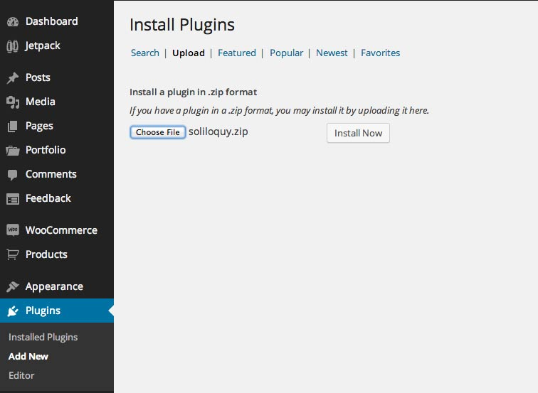
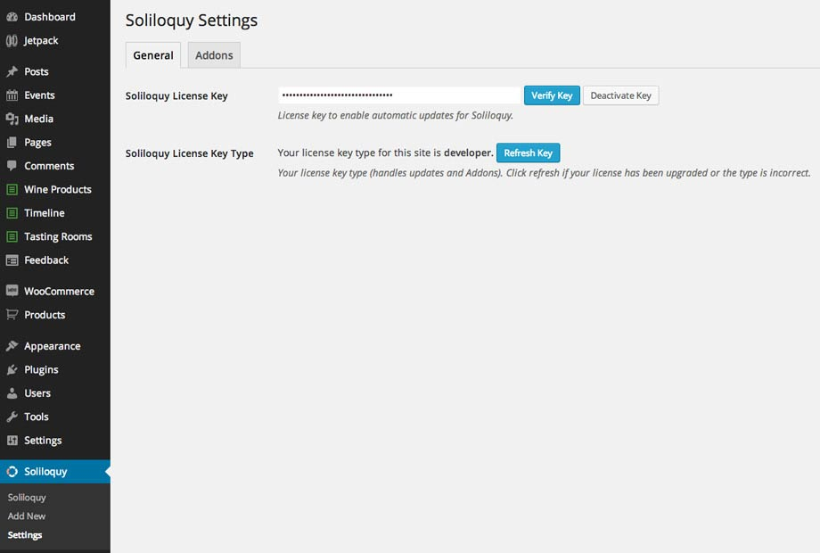
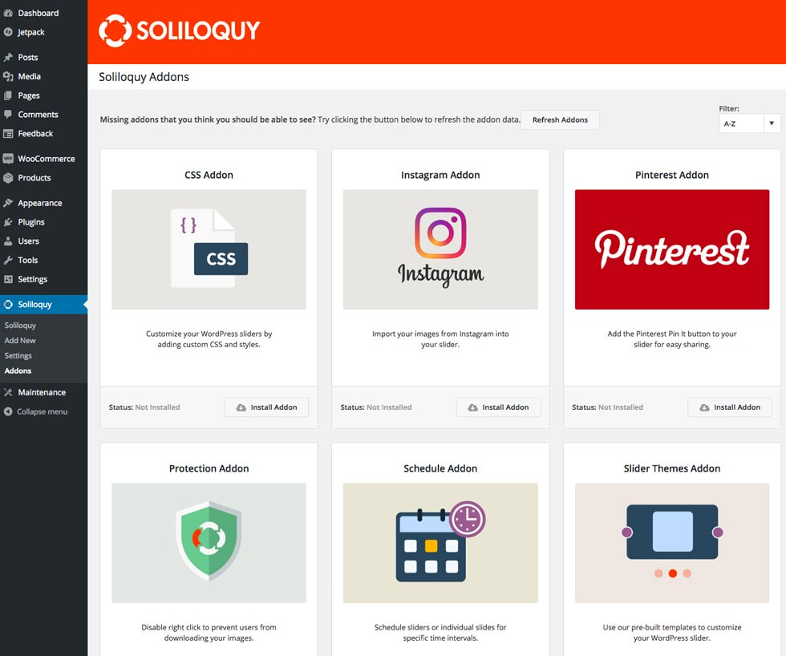
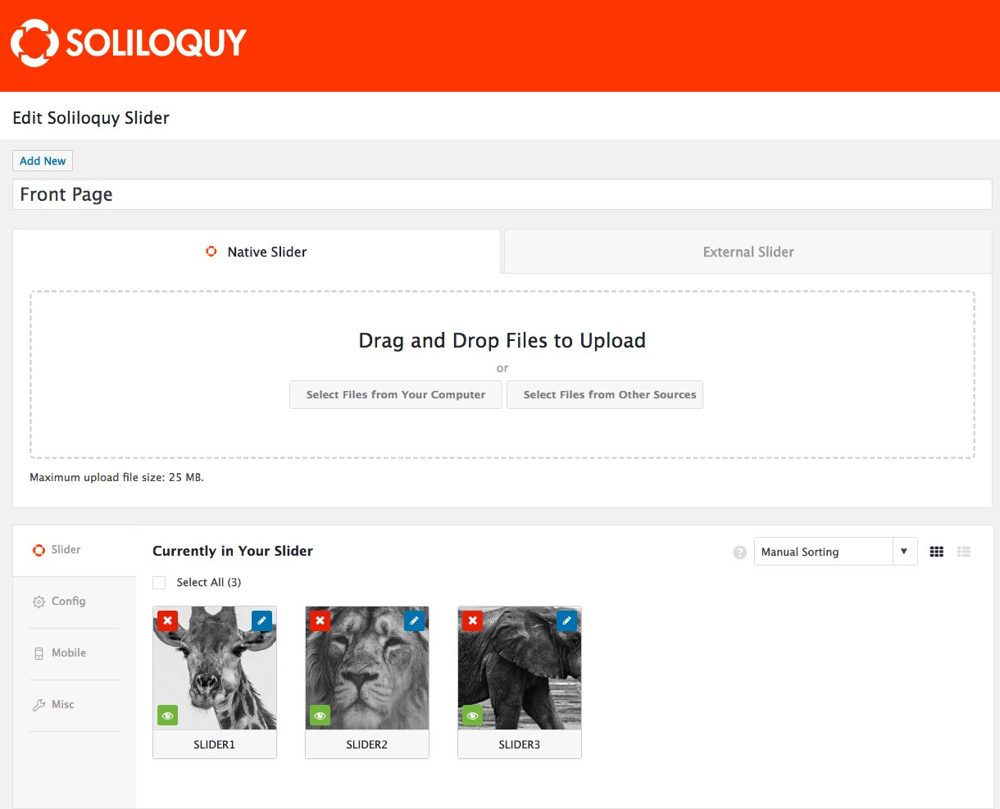
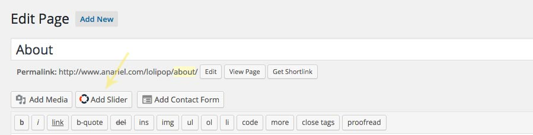
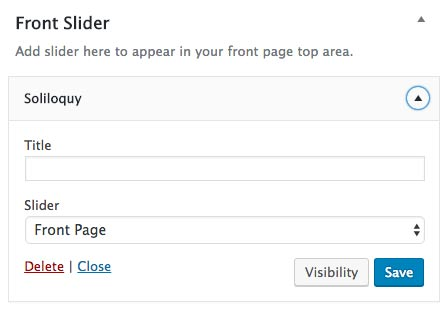

9. Slider
Zeko offers a featured post slider inside the Customizer. You can enable it on the front page. If you are in need of a premium plugin that will offer more features and will not be used just for the post pages this theme comes with the premium Soliloquy slider.
To install the slider navigate to the Plugins » Add New » Upload » Choose file and select "soliloquy.zip" from the plugins folder located in the main folder you downloaded and hit the Install now button.

After you install and activate the plugin you'll see the new menu item named "Soliloquy". Verify your license key (included within the plugins folder), if there is a new slider update available, update it before you continue and than you'll be able to install slider addons if needed.

Themes addon is used in the demo.
If you don't see addons at first click on the "refresh button" and they will show up.

To create slider click on "Add New" and name it. Now you can play and create your slider using many options and features that this great slider offers.
First, upload your images.

Once the images are added you might want to configure slider settings by navigating to Config.
The screenshot shows the config that is used in the demo.

When you finish creating your slider, navigate to the page, post or widget where you want to use your slider. Inside pages and posts, on the top of the edtior you`ll find "Add Slider" button.

Click on the button to open the new window. There you'll be able to choose created sliders and put them inside a page or post:
If you want to use slider inside the widget sidebar, navigate to Appearance » Widgets, there you'll find "Soliloquy" widget. Drag and drop widget to one of the available sidebars and choose the slider you want to display from the dropdown menu.
9.1 Add Soliloquy Slider to your Front Page
When you finish creating your slider, navigate to the Appearance » Widgets and drag and drop "Soliloquy" widget inside the "Front Slider" sidebar
* Find more about this awesome slider here: http://soliloquywp.com/. License for the full premium slider plugin is included inside the "plugins" folder within the main download folder. If you'd need direct support from the author of the plugin you'll need to purchase your own license.